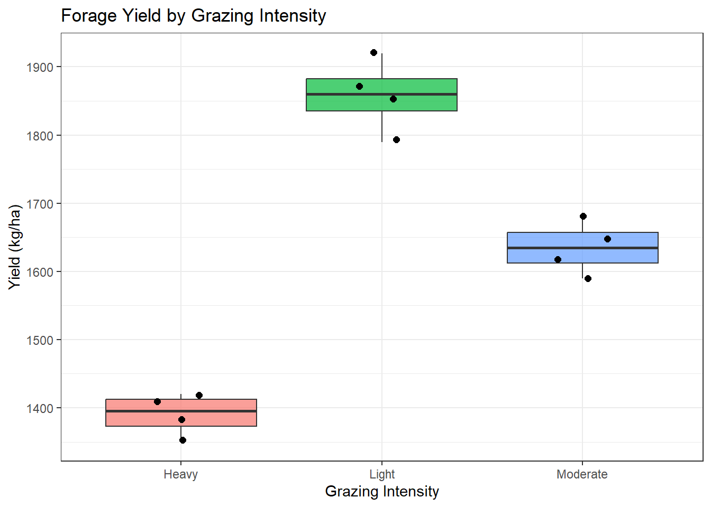

13Week 12 — Comparing More Than Two Means: One-Way ANOVA
anova
one-way-anova
comparing-means
f-test
multiple-groups
Dates: Monday November 2 · Wednesday November 4 · Friday November 6
13.1 Learning Objectives
By the end of this week, you should be able to:
Explain why we use ANOVA instead of multiple t-tests when comparing three or more groups.
Define and calculate sources of variation: between-group (treatment) SS, within-group (error) SS.
Interpret an ANOVA table: SS, df, MS, F-ratio, and p-value.
State the assumptions of one-way ANOVA and check them.
Conduct a one-way ANOVA in Excel and R and interpret the output.
13.2 Background and Conceptual Introduction
The two-sample t-test from Week 11 is great for comparing two groups. But what if you have three fertilizer treatments? Or four feed types? Or five grazing management regimes?
You might think: “I’ll just run all the pairwise t-tests.” If you have 3 groups, that is 3 pairwise tests. If you have 5 groups, that is 10 pairwise tests. Here is the problem: every time you run a test at \(\alpha = 0.05\), there is a 5% chance of a Type I error. Run 10 tests and your chance of getting at least one false positive grows dramatically — this is called inflating the Type I error rate (or the family-wise error rate).
Analysis of Variance (ANOVA) solves this problem by testing all groups simultaneously in a single test. It answers the question: “Is there any significant difference among these group means?” If yes, we then use follow-up tests to figure out which groups differ.
The logic of ANOVA is clever. It partitions the total variability in the data into two sources:
Variation between groups (due to the treatment): Are the group means different from each other?
Variation within groups (due to random error): How much do individual observations vary around their group mean?
If variation between groups is large relative to variation within groups, the F-ratio is large, and we reject \(H_0\).
TipThink About It 🧠
Imagine you measure crop yield from three fertilizer treatment groups. In Scenario A, the three group means are 50, 52, and 51 bushels/acre — very close together. In Scenario B, the means are 42, 55, and 68 bushels/acre — very spread apart. In both scenarios, there is also some variability within each group. For which scenario is the F-ratio likely to be larger? Why?
13.3 Key Concepts and Definitions
One-way ANOVA: ANOVA with a single categorical explanatory variable (factor) with three or more levels.
Factor: The categorical explanatory variable (e.g., fertilizer type with levels: none, low, high).
Levels: The categories within the factor (e.g., none, low, high).
Total Sum of Squares (SST): Total variability in the data from the overall grand mean.
Between-group Sum of Squares (SSgroups): Variability of each group mean around the grand mean. Measures the treatment effect.
Within-group Sum of Squares (SSerror): Variability of individual observations around their group mean. Measures random error.
SST = SSgroups + SSerror
Mean Squares (MS): SS divided by corresponding degrees of freedom. - \(MS_{groups} = SS_{groups} / (k-1)\) where \(k\) = number of groups - \(MS_{error} = SS_{error} / (N-k)\) where \(N\) = total number of observations
F-ratio: The ratio of between-group to within-group variation:
\[F = \frac{MS_{groups}}{MS_{error}}\]
Under \(H_0\), \(F\) follows an F-distribution. Large \(F\) → reject \(H_0\).
Assumptions of one-way ANOVA: 1. Observations are independent 2. Data within each group are approximately normally distributed 3. Variances are approximately equal across groups (homogeneity of variance)
13.4 ANOVA Table
Source
SS
df
MS
F
p-value
Between groups (treatment)
SSgroups
\(k-1\)
SSgroups\(/\)(k-1)
MSgroups/MSerror
from F-table
Within groups (error)
SSerror
\(N-k\)
SSerror\(/\)(N-k)
Total
SST
\(N-1\)
13.5 How to Do It by Hand
NoteExample: Three Grazing Intensities on Forage Yield
A range manager tests three grazing intensities (light, moderate, heavy) on forage yield (kg/ha). Each treatment is applied to 4 plots:
Df Sum Sq Mean Sq F value Pr(>F)
treatment 2 437450 218725 121.7 3.05e-07 ***
Residuals 9 16175 1797
---
Signif. codes: 0 '***' 0.001 '**' 0.01 '*' 0.05 '.' 0.1 ' ' 1
# Visualize group meanslibrary(ggplot2)ggplot(df_grazing, aes(x = treatment, y = yield, fill = treatment)) +geom_boxplot(alpha =0.7) +geom_jitter(width =0.15, size =2) +labs(title ="Forage Yield by Grazing Intensity",x ="Grazing Intensity",y ="Yield (kg/ha)") +theme_bw() +theme(legend.position ="none")

13.8 Interpretation and Common Mistakes
WarningCommon Mistake: ANOVA Significant → Which Groups Differ?
A significant ANOVA F-test tells you that at least one group mean is different from the others — it does NOT tell you which ones. You need a post-hoc test (e.g., Tukey’s HSD) to identify the specific pairs that differ. In R: TukeyHSD(model).
WarningCommon Mistake: Running Multiple t-Tests Instead of ANOVA
If you have 4 groups and run all 6 pairwise t-tests at \(\alpha = 0.05\), your probability of at least one false positive is approximately \(1 - (0.95)^6 = 0.26\) — more than 25%! Always use ANOVA (and post-hoc tests) when comparing more than two groups.
13.9 Summary
One-way ANOVA tests whether any group means differ among three or more groups simultaneously.
ANOVA partitions variability into between-group (treatment) and within-group (error) components.
The F-ratio = MSgroups/MSerror. A large F → reject \(H_0\).
A significant F only tells you some groups differ — post-hoc tests identify which groups.
In R, use aov(response ~ factor, data = df) followed by summary() and TukeyHSD().
13.10 Practice Problems
A plant ecologist measures plant biomass (g) in four habitat types (forest, meadow, wetland, shrubland): Forest: 42, 38, 45; Meadow: 31, 35, 29; Wetland: 55, 60, 52; Shrubland: 37, 33, 40. (a) Calculate the grand mean. (b) Calculate SSgroups. (c) Write out the ANOVA table structure (you do not need to compute SSerror by hand — just set up the table).
In an ANOVA with 3 groups and 6 observations per group (\(N=18\)), what are the degrees of freedom for: (a) between groups, (b) within groups, (c) total?
An ANOVA on fish length across 5 lake sites produces \(F_{4,45} = 2.1\), \(p = 0.094\). (a) What is the statistical decision at \(\alpha = 0.05\)? (b) Does this mean all lake means are equal? (c) What might explain a non-significant result if you believed fish sizes truly differ between lakes?